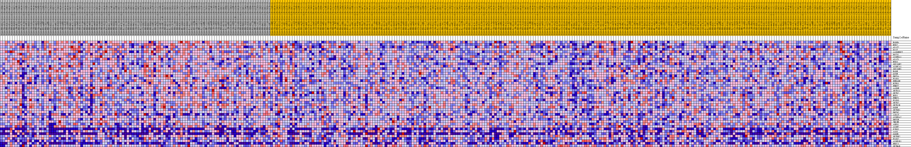
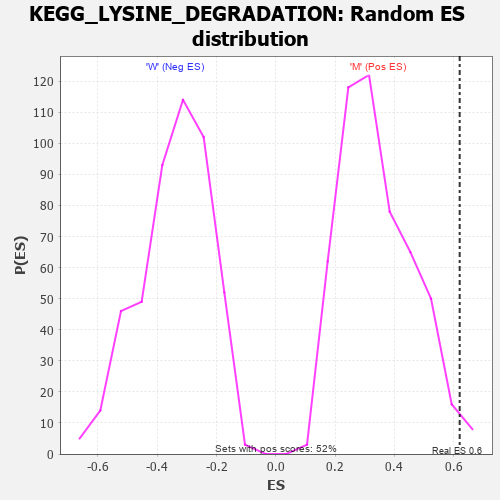

Profile of the Running ES Score & Positions of GeneSet Members on the Rank Ordered List
| Dataset | MUC16.MUC16.cls#M_versus_W.MUC16.cls#M_versus_W_repos |
| Phenotype | MUC16.cls#M_versus_W_repos |
| Upregulated in class | M |
| GeneSet | KEGG_LYSINE_DEGRADATION |
| Enrichment Score (ES) | 0.6201246 |
| Normalized Enrichment Score (NES) | 1.8118247 |
| Nominal p-value | 0.01532567 |
| FDR q-value | 0.060267318 |
| FWER p-Value | 0.286 |
| PROBE | DESCRIPTION (from dataset) | GENE SYMBOL | GENE_TITLE | RANK IN GENE LIST | RANK METRIC SCORE | RUNNING ES | CORE ENRICHMENT | |
|---|---|---|---|---|---|---|---|---|
| 1 | HADHA | na | 129 | 0.225 | 0.0490 | Yes | ||
| 2 | NSD2 | na | 140 | 0.222 | 0.0996 | Yes | ||
| 3 | ACAT2 | na | 165 | 0.215 | 0.1484 | Yes | ||
| 4 | DLST | na | 308 | 0.196 | 0.1906 | Yes | ||
| 5 | AASDHPPT | na | 604 | 0.173 | 0.2247 | Yes | ||
| 6 | DOT1L | na | 674 | 0.168 | 0.2617 | Yes | ||
| 7 | ALDH9A1 | na | 745 | 0.164 | 0.2978 | Yes | ||
| 8 | ACAT1 | na | 859 | 0.157 | 0.3317 | Yes | ||
| 9 | NSD3 | na | 1476 | 0.132 | 0.3506 | Yes | ||
| 10 | SUV39H2 | na | 1659 | 0.126 | 0.3762 | Yes | ||
| 11 | ALDH7A1 | na | 1791 | 0.122 | 0.4018 | Yes | ||
| 12 | SUV39H1 | na | 1950 | 0.118 | 0.4258 | Yes | ||
| 13 | HADH | na | 2103 | 0.114 | 0.4491 | Yes | ||
| 14 | GCDH | na | 2129 | 0.113 | 0.4745 | Yes | ||
| 15 | KMT5A | na | 2191 | 0.112 | 0.4989 | Yes | ||
| 16 | PLOD1 | na | 2282 | 0.110 | 0.5224 | Yes | ||
| 17 | EHHADH | na | 2634 | 0.103 | 0.5396 | Yes | ||
| 18 | ECHS1 | na | 2775 | 0.100 | 0.5600 | Yes | ||
| 19 | EHMT2 | na | 2975 | 0.097 | 0.5784 | Yes | ||
| 20 | AASDH | na | 3058 | 0.095 | 0.5987 | Yes | ||
| 21 | SETD1A | na | 3822 | 0.084 | 0.6041 | Yes | ||
| 22 | SETD7 | na | 3976 | 0.082 | 0.6201 | Yes | ||
| 23 | NSD1 | na | 4973 | 0.070 | 0.6180 | No | ||
| 24 | EHMT1 | na | 5920 | 0.060 | 0.6145 | No | ||
| 25 | PLOD3 | na | 7090 | 0.048 | 0.6043 | No | ||
| 26 | SETD2 | na | 7703 | 0.044 | 0.6032 | No | ||
| 27 | SETD1B | na | 8420 | 0.038 | 0.5988 | No | ||
| 28 | OGDH | na | 9066 | 0.032 | 0.5945 | No | ||
| 29 | SETDB1 | na | 9273 | 0.031 | 0.5978 | No | ||
| 30 | KMT5C | na | 9535 | 0.028 | 0.5996 | No | ||
| 31 | AADAT | na | 9983 | 0.025 | 0.5971 | No | ||
| 32 | ALDH3A2 | na | 10048 | 0.024 | 0.6016 | No | ||
| 33 | KMT5B | na | 10413 | 0.022 | 0.5999 | No | ||
| 34 | TMLHE | na | 15748 | -0.004 | 0.5041 | No | ||
| 35 | ASH1L | na | 20843 | -0.029 | 0.4185 | No | ||
| 36 | ALDH2 | na | 27469 | -0.055 | 0.3111 | No | ||
| 37 | PIPOX | na | 31439 | -0.068 | 0.2549 | No | ||
| 38 | AASS | na | 36354 | -0.084 | 0.1850 | No | ||
| 39 | OGDHL | na | 36617 | -0.085 | 0.1996 | No | ||
| 40 | SETDB2 | na | 37625 | -0.088 | 0.2014 | No | ||
| 41 | PLOD2 | na | 42483 | -0.104 | 0.1372 | No | ||
| 42 | ALDH1B1 | na | 42802 | -0.105 | 0.1555 | No | ||
| 43 | BBOX1 | na | 51577 | -0.152 | 0.0314 | No | ||
| 44 | SETMAR | na | 51829 | -0.155 | 0.0623 | No |

